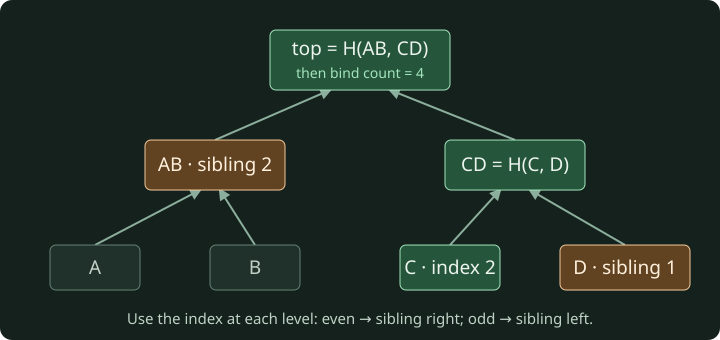

Make a node defend its state when histories disagree.
Synthetic counters · ephemeral keys · no live chain · no production security claim
Your node, your rules
You implement validation, state, commitments, local policy and recovery. Node’s cryptography, the in-process scheduler and this reader are supplied. Begin in a terminal in this folder:
The starter should fail. Edit work/protocol.mjs, then check again. These browser questions are practice, separate from code checks and the final reasoning rubric. All modules stay open.
01 · One message, one meaning
A transaction arrives with a familiar account name and a plausible amount. Decide whether its exact meaning was authorized before looking at anyone's balance.
Your artifact is validateEnvelope in work/protocol.mjs. The supplied signing helper creates ephemeral classroom signatures; your code decides which envelopes the protocol accepts. You do not implement Ed25519.
The signature is about bytes
An object is not a unique byte sequence. These objects have the same fields but different textual order: {"from":"a","to":"b"} and {"to":"b","from":"a"}. If one implementation signs incidental JSON formatting and another reconstructs different formatting, they disagree about authentication before they even reach state.
The lab defines one byte representation. txBytes encodes the fixed array ["LAB:TX:1",network,from,to,amount,nonce] as UTF-8 JSON. The prefix separates this type of signed message from a vote. The network name makes the same authorization unusable in another classroom network. The amount and nonce are integers, not numeric-looking strings. This is a small application-specific encoding, not a claim that arbitrary JSON is canonical.
Worked example: a signs a→b amount 6, nonce 0 in classroom-v1. The verifier reconstructs that same fixed-order array, asks the supplied cryptographic primitive to check a's public key, and gets true. If a relay changes the amount to 7, the reconstructed bytes differ. The old signature no longer authenticates them. If the relay merely changes object property order, the canonical array stays the same.
Commit a response before looking at feedback: node lab.mjs practice 01a, then node lab.mjs practice 01a OPTION_NUMBER, replacing OPTION_NUMBER with your chosen option number.
Reject ambiguity before authentication
An otherwise valid signature does not excuse malformed fields. If one node interprets "6" as 6 and another rejects it, the network may split over the same message. If one ignores an extra memo while another treats it as meaningful, the signed meaning is unclear. Our exact-field rule chooses rejection. This is a protocol design decision; many other protocols make different explicit choices.
Use guard clauses in this order: exact field set, correct network, known sender/recipient, positive safe integer amount, nonnegative safe integer nonce, then signature shape and verification. The public contract lists the returned error codes. Do not use truthiness to validate nonce 0. Do not parse, round or coerce an amount into something the sender did not sign.
A completion problem: after field and type checks have passed, the last step is verifyTx(tx, ctx). Complete the two return paths: success {ok:true} and failure with SIGNATURE. Then implement all earlier guards. Run node lab.mjs check 01; diagnose one failure at a time using its requirement and observed output.
Checkpoint and changed case
Implement the whole validator and rerun module 01. Explain why a correctly signed amount 500 might pass this envelope layer and still fail the next layer. Authentication answers “did this key authorize these bytes?” It does not answer “can this state afford the action?”
For your changed case, consider a signed transaction whose destination account is unknown. Do not silently create that account: the lab has fixed membership. Predict the error category, test it by adapting a public fixture, and keep the original prediction in your notes. Module 02 will turn the accepted envelope into a state transition.
02 · Apply it once
Two copies of the same authentic message arrive. Implement a transition that changes state once and makes the replay ineligible.
Your artifact is applyTx. A state maps each account name to a balance and nonce. A nonce is the next transaction sequence number that the sender may use. The starting balance is just a counter; it has no monetary value.
Authorization meets current state
Worked example: a starts at (balance 20, nonce 2), b at (4,0). An authentic a→b amount 5, nonce 2 is eligible. Copy the input, subtract 5 from a, add 5 to b, then increment a's nonce. The result is a (15,3), b (9,0). The total remains 24. The original input remains unchanged so another branch can execute from it independently.
Now replay that message. Its signature still verifies, but nonce 2 differs from a's next nonce 3. Reject it without changing anything. A future nonce 4 also rejects against this state: this transition cannot assume nonce 3 will eventually arrive. Later the mempool will decide what to do with future transactions.
Complete the final step of the example: after copying and moving the counters, which account's nonce changes? Only the sender authorized an action. Receiving counters does not consume the recipient's next sending nonce.
Atomic means no partial effect
Suppose a has balance 3 and tries to send 5. Checking funds after subtracting would temporarily create −2. If you return that mutated object on failure, a rejected message has changed history. Check all preconditions before touching a private copy. Either return a complete new state or a failure; never return a partially applied state.
Self-transfer exposes careless assignment order. From a (20,2), sending 5 to a should leave balance 20 and advance nonce to 3. If your code reads two old balances and overwrites the same property twice, it may accidentally produce 25 or 15. Perform debit and credit on the same copied record, or handle self-transfer explicitly. The amount must still be affordable; a self-transfer is not a permission to pass nonsensical amounts.
JavaScript integers stop representing every consecutive number beyond Number.MAX_SAFE_INTEGER. The envelope checks the input, but arithmetic can still overflow. Check the next sender nonce and, for a distinct recipient, the resulting recipient balance. This boundary test uses a synthetic fixture outside the normal 140-counter genesis; it protects the declared function contract.
Checkpoint and changed case
Write applyTx and run node lab.mjs check 02. Do not comment out authentication because module 01 already exists: every externally callable transition must enforce its contract. Keep rejected-state and successful-state mutation tests separate.
For a changed case, a and b each sign a transaction sending their entire balance to c. Their nonces are independent. Decide whether swapping their order changes the final balances and whether it changes each sender's nonce. Then contrast two same-sender transactions with the same nonce: only the first can apply. You have now built the deterministic function every branch will reuse.
03 · Prove a state claim
A peer claims c has eight counters but sends only a small proof. Compute whether the claim belongs to the exact state commitment you trust.
Your artifacts are stateRoot and verifyProof. A Merkle tree repeatedly hashes pairs of hashes into a single root. A membership proof supplies the sibling hashes needed to reconstruct that root from one claimed leaf. This saves sending every account, but it does not choose which root is authoritative.
Commit to structure as well as content
Sort account names. Encode each account as [name,balance,nonce], then call the supplied leafHash. Internal pairs use branchHash. The two helpers use different prefixes so a leaf's encoded content is not confused with an internal pair. At an odd-width level duplicate the last hash. Finally use rootHash(count,top) to bind the number of leaves. For the empty state, the top is SHA-256 of empty bytes.
Worked example with four leaves A, B, C, D: form AB=branchHash(A,B) and CD=branchHash(C,D), then top=branchHash(AB,CD). Wrap count 4 with that top. To prove leaf C (index 2), the proof supplies D first and AB second. Index 2 is even, so hash C on the left of D; the next index is floor(2/2)=1, so hash AB on the left of CD. Wrap count 4 and compare with the trusted root.

The supplied proof contains D and AB. The verifier reconstructs the green path from C; it does not receive every account. On narrow screens, scroll the diagram horizontally to read every label.
Complete this example before coding: for leaf B at index 1, the first sibling is A. Place A on the left, not on the side determined by arrival order. The direction follows the position.
A valid proof can still be the wrong evidence
Every proof is relative to a root. An old root can honestly commit to an old balance while the currently selected history has another balance. The verifier cannot answer “latest” from the path alone. It also cannot establish that the entire hidden tree is sorted; it checks membership at the claimed position. The state-root producer's deterministic construction and the node's validation layer establish that additional context.
Check the proof's exact shape, integer index/count bounds and exact path length. Reject a missing sibling rather than substituting an empty hash. Reject extra siblings rather than stopping early. At an odd-width final position, the supplied sibling must equal the current hash because the rule duplicates it. Bind the count so a three-leaf tree and a four-leaf tree ending with a duplicate are not treated as the same commitment.
Our odd-leaf duplication and outer size commitment are classroom choices. RFC 9162 uses a different tree construction; do not claim wire compatibility. The useful shared ideas are domain-separated hashes and verifying a path against a known commitment.
Checkpoint and changed case
Implement the root, then the verifier, and run node lab.mjs check 03. The fixture generator supplies proofs so you can focus on checking them. The frozen genesis root is a useful regression vector, but one matching root does not prove general correctness: the checks also cover three leaves, one leaf, the empty state, reordered properties, tampered claims and stale roots.
For your changed case, a branch changes only c's nonce through a self-transfer. Its balance stays the same. Predict whether a proof of the old (balance,nonce) record still verifies under the new root. Explain why committing only balances would hide a replay-relevant state change. Keep that argument for the capstone's stale-proof incident.
04 · Pending is not accepted
The next transaction arrives before its predecessor. Build a bounded pending-transaction selection policy that can revisit it after state advances.
Your artifact is selectMempool. A mempool is local candidate storage, not agreed history. In this lab the function returns only currently executable transactions in an order that can be applied. It does not preserve a quarantine queue for everything else.
Eligibility changes during selection
Worked example: a has nonce 0 and balance 20. Arrival order is T1=(a→c, 4, nonce 1), then T0=(a→b, 5, nonce 0). On the first pass T1 is future and cannot execute. T0 executes on the private working state, leaving a balance 15 and nonce 1. On the next pass T1 becomes eligible; selecting it leaves balance 11 and nonce 2. Stop after a pass makes no progress or the limit is reached.
This is not sorting by nonce. Two senders have independent nonce sequences, and one transaction can fund another sender. From c balance 0, c→d cannot execute until a→c funds it. Repeated eligible passes solve both examples using the transition you already wrote, without inventing a second set of state rules.
Complete the control flow: after a full pass with progress === false, continuing cannot change state. Break. Repeatedly retrying the same unfunded input forever is a liveness bug in the program itself.
Local policy is not consensus validity
If two authentic transactions spend the same nonce, the first eligible one in this function's input wins. Another node may see the reverse order and prefer the other. Both preferences are reasonable local policies under this contract. Once a valid block chooses one, every node must execute that block in its stated order.
Use txId to suppress duplicate selection and retain the limit even during a pass. Never mutate the caller's state or input list. Validate malformed envelopes before computing their IDs; hostile traffic is data, not a reason to crash a whole selection pass.
This simple pool drops currently ineligible candidates from its returned set. Real systems may retain future transactions, impose per-account limits, prioritize fees or protect against resource exhaustion. Those are extra policies, with extra assumptions. Our capstone will show exactly what is lost when a candidate is dropped and no copy remains.
Checkpoint and changed case
Implement repeated passes and run node lab.mjs check 04. Record the selected transaction IDs, not just the number selected. Selecting two conflicting messages is not equivalent to selecting a valid dependency chain of length two.
For a changed case, use pool order [c→d amount 6, a→c amount 3, b→c amount 4], all nonce 0 and a/b funded. Decide whether c's transfer can execute after one funding transaction or requires both. Then set the limit to 2 and explain why the returned list can legitimately exclude c's transfer even though enough candidates exist to enable it later. A bounded policy trades completeness for work limits.
05 · A block is a claim
A peer advertises a long history with a convincing-looking hash. Validate the claimed child from its accepted parent before letting it compete for selection.
Your artifact is validateBlock. The supplied runtime stores validated records and buffers children whose parents have not arrived. Your function owns the boundary between an untrusted block object and a record fork choice may inspect.
Recompute instead of believing
A block supplies a parent ID, height, ordered transactions and claimed state root. Work from the accepted parent's state. Check that the parent ID matches and the child height is exactly one greater. Apply each transaction in order through applyTx. Compute stateRoot from the resulting state and compare it with the claim. Only then compute the block's ID and return a validated record.
Worked example: parent P is height 2 with a=(12,1), b=(3,0). Its child claims height 3 and contains a→b amount 4, nonce 1. Execution yields a=(8,2), b=(7,0). A matching commitment authenticates that deterministic result relative to the input parent. If the child instead supplies the root for a=(12,1), b=(3,0), its claim is false even though the transaction signature is real.
Complete the final step: when recomputed root differs, return ROOT without inserting any record into the accepted history. A hash-shaped string is not evidence that computation occurred.
Missing evidence and invalid evidence differ
A child can arrive first because messages were reordered. That does not prove the child is invalid. The runtime buffers it outside fork choice, then retries it when a valid parent arrives. If the parent is rejected, the child never becomes a validated descendant. The supplied scheduler does this plumbing so your task remains protocol validation.
A block may include transactions your local pool did not prefer. Validate them against the common parent state, not your arrival order. By contrast, two same-sender/same-nonce transactions in one block cannot both execute: after the first, the second is a replay. The entire block rejects; the parent state remains available unchanged.
The 16-transaction bound is a classroom resource bound. Reject malformed block shapes and oversized arrays before execution. There is no claimed proof-of-work, proposer identity or reward. Anyone in this controlled fixture can propose a block; that fact sharply limits what the later fork rule can promise.
Checkpoint and changed case
Implement and run node lab.mjs check 05. Check error categories as well as acceptance: a false height and a false state root violate different preconditions. Neither is “just a fork we dislike.”
For a changed case, an invalid high-height block and a valid shorter block arrive together. Explain which one is even eligible for fork choice. Then consider a child of the invalid block. It cannot borrow the other block's state merely because the heights match. Parent identity links a specific transition history, not a generic height bucket.
06 · Two honest histories
Two nodes accept different valid branches during a partition. Implement a shared ordering rule and state exactly what agreement after delivery does—and does not—establish.
Your artifact is chooseHead. It receives validated records only. You do not validate advertised headers inside a sorting function; module 05 establishes the precondition.
Agreement needs a shared total order
Consider two observations. Node X receives valid height-2 branch F, then valid height-2 branch A. Node Y receives A, then F. If each keeps the first arrival, they remain split despite possessing identical evidence. If each chooses the smaller ID on equal height, they converge after both messages arrive.
Our order is greatest height, then lexicographically smallest ID. Worked example: candidates (height 2, ID c), (height 3, ID f), (height 3, ID a) select a. Height dominates ID; the tie rule only applies at equal height. The input list must not be sorted in place because other code may retain its order.
Complete the comparator: when heights differ, prefer the larger. When they match, use explicit string comparison. Neither current wall-clock time nor local arrival position belongs in this protocol order.
Convergence is conditional; finality is stronger
Now compare two more observations. A finite set of valid records eventually reaches every honest node: all compute the same maximum, so they converge. A sender keeps generating longer valid branches, or some messages are delayed forever: the assumptions of that convergence argument no longer hold. A shared sorting rule does not cause missing information to arrive or limit an adversary's proposals.
Even when all nodes select one head now, a longer competing branch can arrive later. This rule permits reorganization. It supplies no irreversible finality and no economic or computational cost for building length. Calling it “longest chain” must not smuggle in assumptions from proof-of-work systems. The lab has no mining or stake, and is not a security design for an open network.
Safety means a prohibited outcome never occurs under declared assumptions. Liveness means a required outcome eventually occurs under declared assumptions. “All nodes eventually select the same tip after this finite schedule is fully delivered” is a modest convergence property. “A certified value at a fixed height cannot conflict with another certified value” will be a different safety property in the next module.
Checkpoint and changed case
Implement and run node lab.mjs check 06. Keep a written counterexample to the statement “the selected transaction is final.” You need only a valid later branch that wins the ordering rule.
For a changed case, two nodes have identical validated records but different local mempools. Predict whether head selection differs. Then let one node miss a single height-4 record. Explain why a temporary disagreement no longer demonstrates a comparator bug. Distinguish different computations over the same input from the same computation over different input.
07 · What can a quorum promise?
One side of a partition repeats the same signed vote three times. Verify distinct authenticated voters and explain why safety can require waiting.
Your artifact is verifyCertificate. The lab has four fixed validators and asks for three distinct matching votes. A vote binds the voter, height and block ID in a separate signed message domain. This checker is not a complete consensus protocol: it contains no leader election, round changes, locking protocol or durable restart logic.
Count identities, not packets
Worked example: votes from a, b and c for block X at height 2 form a three-voter certificate. Packets [a,a,b] do not. A vote by c for X at height 3 does not join the height-2 certificate. A vote by c for Y at height 2 does not support X. Invalid packets may be ignored; they must not prevent three other valid matching votes from forming a certificate.
Your verifier first checks that the target is a nonnegative safe integer height and a 64-character lowercase hex block ID, and that votes arrive as an array. It then checks each vote's exact shape, fixed membership, matching target and signature before adding the voter to a Set. Complete the last step: return true only if the Set has at least three names. Do not count the same key twice because the envelope was copied.
The order of those steps matters. Suppose a forged packet names a, followed by genuine matching votes from a, b and c. Reserving a's name before checking the forged signature would discard the later genuine vote and hide an available quorum. Even an authentic vote for another height must not reserve that identity for this height. Before adding an identity, decide which checks must already have succeeded. Then compare the forged-first and forged-last orders: both must recognize the same three valid voters. This prevents invalid evidence from suppressing progress; it does not create any new consensus or network-liveness guarantee.
Consider two size-three subsets of four validators. They overlap in at least 3+3−4=2 validators. If at most one validator equivocates, at least one overlapping validator is honest. If honest validators never sign competing values for the same height, two conflicting certificates at that height cannot both form. Every “if” in that sentence is part of the result.
The cost of preserving the rule
In a 2+2 partition, neither side can collect three local identities. Duplicating packets would not create a quorum; lowering the threshold would change the overlap argument. Waiting preserves the declared fixed-height safety rule but prevents local progress.
Healing the partition is not by itself a complete liveness proof. If honest validators already cast incompatible votes and never change them, a three-vote certificate may remain impossible even after messages resume. Real consensus protocols need additional rules to move through rounds safely. We deliberately have not implemented those rules, so do not claim general Byzantine consensus or eventual certificate formation.
A certificate also does not replace block validity. Three keys can sign a false state claim; your node still validates the block. Conversely, a valid selected branch may have no certificate. Keep the layers separate in both code and your incident report.
Checkpoint and changed case
Run node lab.mjs check 07. Then write two short arguments: one for fixed-height uniqueness under the stated fault bound, one showing loss of liveness in a 2+2 cut. Use identities and sets, not a vague claim that “a majority is secure.”
For a changed case, permit two equivocating validators. Construct two different sets of three voters that overlap only in those two. Each remaining honest validator can sign one value without breaking its rule, yet both certificates can form. This is a counterexample outside the original fault bound, not a contradiction of the bound. Explain why a correct cryptographic signature does not stop an authorized signer from signing incompatible messages.
08 · Recover without inventing history
A partition heals after both sides executed valid but conflicting transactions. Rebuild from the winning branch and investigate the pending work that survives.
Your artifact is reconcile, followed by an incident report from the supplied finite scheduler. This is the integration task: every earlier mechanism is exercised, while the transport, keys and trace recorder remain supplied.
Revalidate from the selected state
Worked example: old branch spends a nonce 0 sending 20 to b. The selected new branch spends a nonce 0 sending 30 to c. The old transaction was authentic and valid when first accepted; it is ineligible now because the new state already consumed nonce 0. Returning it to a ready pool without revalidation resurrects a conflict.
Do not reverse old balance arithmetic into whichever state happens to be current. The supplied path records already carry the deterministic result of every validated branch. Select the new tip's state, gather old-branch transactions plus pending candidates, remove transaction IDs included on the new path, then rerun the bounded mempool policy. Return a copy of the new state. Pending transfers are not yet committed balances.
Complete the final step: a still-valid orphan b→c can fund a waiting c→d. Repeated eligible selection must discover the dependency even if c→d appears earlier among candidates. This is module 04 returning inside a different problem, not a separate algorithm to improvise.
Storage policy has observable consequences
The ready-only pool returns eligible candidates and drops the rest. During a sequence of intermediate head changes, a candidate may become temporarily ineligible and be forgotten. If a later state would permit it, correct validation cannot recover input that no longer exists. A separate retained candidate queue, journal or rebroadcast mechanism could address that liveness concern; our runtime does not pretend it has one.
The simulator therefore reports two observations separately: the live ready pool after all intermediate updates, and one recovery using an explicitly retained set of original candidates. Differences are evidence of the declared policy, not a reason to fabricate a successful rebroadcast. Generated ephemeral keys can change equal-height ID ties between processes; the selected final longer branch and retained-candidate result are stable, while intermediate trace details can differ.
The unfamiliar transfer incident
First pass module 08: node lab.mjs check 08. Before running the transfer schedule, write a prediction in work/incident.md using the report template. Do not open instructor material. This is an unfamiliar composition of earlier mechanisms, not a hidden or source-secure examination.
Genesis is a=100, b=40, c=0, d=0, with all nonces 0. Left creates L1 containing a→b amount 30 nonce 0, then L2 containing b→c amount 8 nonce 0 followed by c→d amount 5 nonce 0. Right creates R1 containing a→c amount 50 nonce 0, R2 containing c→a amount 12 nonce 0, and R3 containing a→d amount 2 nonce 1.
Left has pending b→a amount 4 nonce 1 and c→d amount 6 nonce 1. On healing, left receives a fabricated high-height claim and a false-root claim, then R3, R2, R1 in reverse ancestry order, plus a duplicate R1. Right receives L2 before L1. A copied vote packet tries to turn two voter identities into three votes. A peer also presents a genuine proof of c's old L2 record as evidence about the current selected state.
Predict the final selected branch, all committed balances/nonces, the fate of each retained orphan/pending candidate, both false-block errors, the copied-vote decision and the stale-proof decision. State what additional condition would be needed for general progress, and why this exercise has not implemented it.
Now run node lab.mjs simulate transfer. Compare the receipt to your prediction, preserve every mismatch, and repair code if needed. To replay identical signed inputs and tie details, use node lab.mjs replay work/attempts/YOUR-SIMULATION-ID/result.json. The saved scenario contains public keys and signed messages, never private keys. The final report needs a concrete counterexample outside one declared assumption. Use the rubric in COURSE.md; a green process exit alone cannot evaluate your reasoning.
Deliver your laboratory
Run all checks and preserve the resulting source hash. Your output is the learner-authored protocol file plus your incident report and receipts. An implementation, a reasoned trace and an honest account of assumptions together support review. They still do not establish production security, general network behavior or human learning gains.
09 · Remember your vote after a crash
The node restarts. Its signing key still works. Does it remember what it promised?
Module 07's uniqueness argument assumes that honest validators never vote for two different values at one height. A perfectly valid signature does not enforce that rule. In this extension you build the missing vote guard, crash it between effects, and connect one forgotten decision to two conflicting certificates.
This is an optional 60–90 minute project after module 07; the estimate has not been calibrated with learners. Keep your existing work/protocol.mjs. Your new artifact is work/vote-guard.mjs plus a short restart report. Only your own trusted local code belongs in this runner.
One forgotten vote is enough to change the fault bound
Four validators are a, b, c and d; three distinct votes certify a target. Validator a deliberately signs both X and Y. Validator b sends a vote for X, crashes before remembering it durably, and then signs Y. Validator c signs only X; d signs only Y.
X now has a/b/c. Y has a/b/d. Both sets have three authentic votes. Their intersection is a/b: one malicious signer and one signer whose restart broke its promise. The original “at most one equivocator” assumption is false. The certificate checker is correct to recognize both sets; it cannot repair the history of signing.
Write those two voter sets before you code. Identify which participant's behavior you can prevent with a local journal and which behavior you cannot prevent if a participant deliberately bypasses it.
Save the decision before it can leave
The supplied model executes an ordered list of effects. A persist effect atomically appends one record to durable history before the next effect runs. A send effect signs the record and makes the vote observable. A crash discards the remaining effects, but keeps committed history. A failed persist aborts the rest of the list. Only one request runs at a time.
Worked example: the journal is empty and the request is X at height 7. If you send first, a crash between sending and persistence leaves peers holding X while your recovered journal is empty. A later request for Y looks new. If you persist first, the same crash leaves X remembered but unsent. After recovery, resending X is safe; changing the decision to Y is not.
A stored but unsent vote may delay progress. That cost is real. Do not delete the record just because you cannot find a receipt from a peer: absence of an acknowledgement does not establish that a vote was never observed.
The first check must fail with NOT_IMPLEMENTED. Edit work/vote-guard.mjs. The starter is separate so you do not have to replace or extend your earlier protocol implementation. Starting again refuses to overwrite it.
Implement planVote(journal, request), a pure function. Every vote record has exactly height and blockId. Height is a nonnegative safe integer; blockId is 64 lowercase hexadecimal characters. The journal is an array of these records for one fixed validator key on classroom-v1. It contains every committed decision; nothing is pruned in this model. Requests are assumed to name already validated blocks. You do not implement signatures or block validity again.
First validate the complete journal. Malformed history, or two different block IDs at one height, returns exactly {ok:false,code:'JOURNAL'}. Identical duplicate records are permitted, including when they are not adjacent. Inspect the whole history even if an earlier entry matches the request. Next validate the request; malformed requests return {ok:false,code:'REQUEST'}. Then apply the decision rule.
For a previously unseen height, return {ok:true,effects:[...]} with exactly two effects: persist the requested vote, then send it. Each effect is {type:'persist'|'send',vote:{height,blockId}}. For the same height and same block ID already recorded, return only the send effect; retries must not grow the journal. For the same height with a different block ID, return {ok:false,code:'CONFLICT'} with no effects. Never mutate the journal or request.
This is a map of decisions by height, not just a highest-height watermark. A new lower height is allowed if absent from the journal; an old recorded height remains protected after higher decisions. Real protocols can impose other height/round/step rules. Do not import those rules into this interface.
Start by answering three implementation questions: what data structure makes conflict lookup clear, why must journal validation finish before returning a retry, and which effect can safely occur first? The source supplies validVote and sameVote helpers in lib/restart-model.mjs if useful; using them is optional.
Run node restart.mjs check after each repair. The checks include retries, malformed recovery, write failure and all 729 three-request schedules built from three requests and three crash cuts. That is a bounded exploration, not a proof for arbitrary inputs. Receipts preserve your source before execution under work/restart-attempts/.
Predict, crash, compare
Before running the experiment, create work/restart-report.md. Predict these three cases for X followed, after restart, by conflicting Y: crash before effect 0; crash after effect 0; finish both effects and restart. For each, write the recovered journal, emitted votes and possible certificates. Then repeat your prediction for the deliberately wrong send-before-persist planner.
node restart.mjs simulate crash
This uses your earlier verifyCertificate and first runs module 07's checks, including the accepted eligibility-before-dedup repair. If that prerequisite fails, the experiment stops. Inspect learner.rows and sendBeforePersistControl.rows in the receipt. With a correct guard, no crash-only row should contain two certificates. The unsafe control should expose the gap after its first effect. Explain why “allSignaturesAuthentic: true” can coexist with conflicting certificates.
The two block IDs are synthetic names. The certificate experiment does not execute their transactions or choose a head. Its evidence concerns signing discipline only. Unlike simulate transfer from module 08, this experiment is deterministic at the decision level, but each run has new ephemeral keys and signatures. Its receipt includes public keys and signed votes; it does not export private keys. Compare decisions and memberships, not signature bytes between runs.
Changed case: the disk lies about the past
Now change one assumption: after a crash, the storage layer restores an empty old snapshot, erasing even a committed vote. The validator identities rotate to d as the malicious signer, c as the restarted signer, b voting only X and a voting only Y; the height is 19. Predict the outcome with your correct guard before running:
node restart.mjs simulate rollback
Find a row in which X was persisted and sent before the snapshot rollback, yet Y is later sent too. Name both quorums and their intersection. Why can't a pure function distinguish an erased empty journal from a genuinely fresh one? What assumption must a stronger system provide outside this function? Discuss a trusted non-rollbackable record or exclusive signer as an assumption to investigate, not as a security feature implemented here.
Deliver evidence and state the boundary
Your report should contain the saved predictions, the source hashes and receipt paths, a concrete unsafe crash trace, a concrete safe trace, and the changed-case counterexample. Explain the difference between a duplicate retransmission and a conflicting vote. Explain why rejecting every request would satisfy silence but fail the project's progress requirements. Include one additional threat outside the model, such as two concurrent processes sharing a signing key with separate journals.
A reviewer awards 0 (missing or incorrect), 1 (partly supported), or 2 (correct with a concrete trace) for each: effect ordering and retry behavior; derivation of the two certificate sets; explanation of the rollback indistinguishability; honest distinction between modeled crashes and real persistence. The project target is passing executable checks and 2 in each reasoning dimension. It is not a validated mastery threshold.
The journal is an in-memory model, not a filesystem implementation. The fixture holds one key pair per identity across simulated crashes inside a single process, then discards it at process exit. We do not test fsync, torn writes, real power loss, key migration, concurrent signers, adversarial storage or network transport. Modules 01–08 retain their original assumptions. This extension supplies no locking across consensus rounds, proof of finality or guaranteed progress after split votes.
For context, Tendermint's documentation describes flushing its consensus write-ahead log before processing its validator's own messages to support deterministic recovery. Our much smaller decision journal isolates one ordering lesson; it is not Tendermint's WAL or signing protocol. See SOURCES.md for the reference.